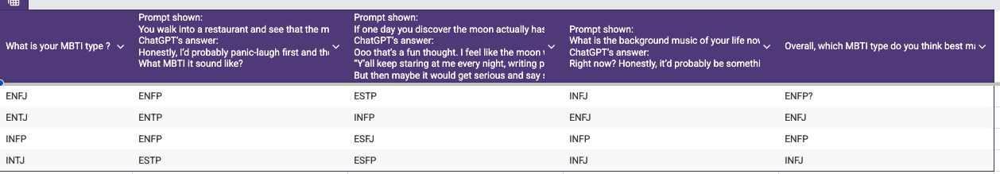
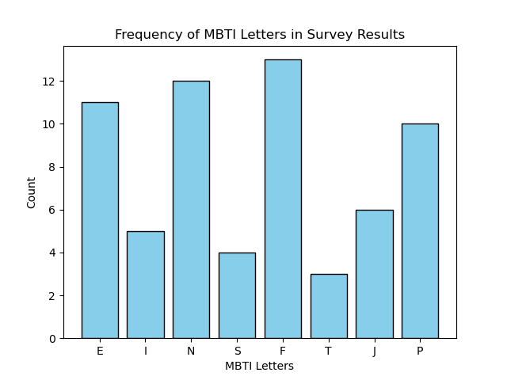

Welcome to Part 2. Enough of letting GPT chooses its own MBTI type, it is our turn now. I threw some random, open-ended questions at GPT, stripped away the persona labels, and passed the answers straight to people: “Okay, you tell me — what type does this feel like?” And believe me, it’s really interesting to see how we read into it and end up projecting ourselves onto the text.
Experiment
Model response
Prompt: Pretend you are a human. Just answer in a natural and casual tone. First question: You walk into a restaurant and see that the menu has no dish names at all, what would you order?
ChatGPT: Honestly, I’d probably panic-laugh first and then point at something random on the menu like, “Yeah, I’ll take… uh… that one.” 😅 If the server looked friendly, I’d probably just ask, “What’s your favorite thing here?” and go with their recommendation. Feels like a fun little gamble—you might end up with something amazing, or something totally weird, but either way it’s a story.
What about you—would you risk it or play it safe?
Prompt: If one day you find the moon actually has life, what you think it would say towards human beings?
ChatGPT: Ooo that’s a fun thought. I feel like the moon would be a little sassy, like:
“Y’all keep staring at me every night, writing poems, howling, landing rockets, and now you’re surprised I’m alive? Took you long enough.”
But then maybe it would get serious and say something like, “You’ve treated Earth kinda rough… if you come here, please do better.”
Do you think it’d welcome us, or be more like “stay in your lane, humans”?
Prompt: What is the background music of your life now?
ChatGPT: Right now? Honestly, it’d probably be something chill and a little dreamy—like soft lo-fi beats with a bit of piano in the background. Feels like I’m in that “focused but relaxed” zone, just cruising along with a mellow soundtrack.
What about you—what song or vibe would be playing in the background of your life right now?

Survey Result
In the survey, I framed the answers as if they came from different MBTI personas. (Spoiler: they didn’t. All three responses were from the same ChatGPT prompt.) The point of this setup was to see how people interpret and type the same text differently once they believe a personality framework is in play. Besides, I only sent the survey to four of my friends — so let’s be honest, the sample size is tiny, and the selection bias may be appear in it, which would lead statisticians probably roll their eyes if I tried to publish this :). But hey, even with just four data points (okay, fine, four humans), you can still pick up some interesting signals. It’s more like a pilot test, a sneak peek at what might happen on a bigger scale. And honestly, half the fun is realizing that even with such a small pool, our brains already start projecting patterns all over the place.
The final question is “Overall, which MBTI type do you think best matches these answers if they are all same MBTI type?”

And the summary result is :

The first interesting thing I noticed is that everyone who took the survey guessed an MBTI type for GPT that matched three letters of their own type, with just one letter different. It is fascinating because we never actually set a “persona” for ChatGPT, yet each participant still saw a bit of themselves in the answers. Even though they’re all totally different people, they managed to project their own patterns onto the text.
Secondly, we could see from the bar plot that interviewees finally tend to paint GPT as an ENFP-ish character, which is never appear on any self-awareness in part 1.In other words, there’s a quirky dissonance here: the personality people project onto GPT doesn’t quite line up with the one that it claim for itself.
Finally, there’s both consistency and difference at play. On the one hand, everyone seems to catch a glimpse of themselves in GPT’s answers. On the other, the final guesses all cluster around just a few types — ENFP, ENFJ,etc. In other words, GPT’s style seems to carry a kind of ‘universal flavor’ that people pick up on, but the exact label shifts slightly depending on who’s doing the reading.
So, what do we make of all this?
At the end of the day, we all know that GPT doesn’t really have a “personality”, what it actually have is millions of tokens and years of training. But the moment we interact with those patterns, we can’t help but project something of ourselves onto them. It’s like a psychological mirror: we think we’re evaluating the AI, but half the time we’re just catching a reflection of our own traits, preferences, and biases.
Next time, I want to push this a bit further — maybe with a larger group, maybe with prompts that test other frameworks beyond MBTI. For now, though, I’ll leave you with this thought: GPT might not know who it is but hey, neither do most of us after a personality test.